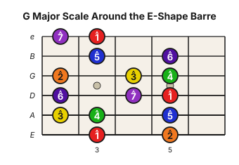

Level 2 · Chapter 19
The Fretboard: The Movable Major Scale Around the E-Shape Barre
The arpeggio chapter gave you the chord tones inside a barre shape: 1, 3, and 5. That is the chord's skeleton.
A scale gives you the rest of the palette around that same skeleton. In this chapter we will use one movable Major-scale pattern, wrapped around the E-shape barre chord. One pattern only. The full CAGED scale system can wait.
Arpeggio = chord tones
Start with the G Major E-shape barre at the 3rd fret. The arpeggio climbed through the notes of the chord: G, B, D, G, B, D, G, B. In degree language, that is 1, 3, 5, 1, 3, 5, 1, 3.
Those are the notes you hear when the chord is strummed, just separated into a line.
Scale = the whole palette
Now put the missing colors back in. G Major uses seven degrees: 1, 2, 3, 4, 5, 6, and 7, then 1 again in the next octave. Count the notes by name and the old Major-scale formula is still there: G (1), A (2), B (3), C (4), D (5), E (6), F♯ (7), G (1).
Here is that scale folded around the same E-shape barre chord:

Notice what is hiding in plain sight. The arpeggio notes did not go away. The 1s, 3s, and 5s are still inside the pattern. The scale simply adds 2, 4, 6, and 7 around them.
The shape moves with the barre
This is the payoff. A movable scale pattern is a scale shape that keeps the same fret relationships when you move it to a new root.
If the E-shape barre is at the 3rd fret, the root is G, so the pattern gives you G Major. Slide the whole thing to the 8th fret and the root becomes C, so the same pattern gives you C Major. Slide it to the 10th fret and it becomes D Major.
The notes change. The relationships do not.
Read it as distances from the barre
The easiest way to move the pattern is to read everything from the barre fret. Let R mean the fret where your E-shape root sits on the low E string.
The pattern is:
- Low E string: R, R+2
- A string: R-1, R, R+2
- D string: R-1, R+1, R+2
- G string: R-1, R+1, R+2
- B string: R, R+2
- High e string: R-1, R
For G, R is 3. So the A string gives you frets 2, 3, and 5. For C, R is 8. The same A-string notes move to frets 7, 8, and 10. You did not learn a new scale. You slid the old one.
Hear it
Play the G Major arpeggio first: 1, 3, 5, 1, 3, 5, 1, 3. Then play the scale pattern from the low 1 to the high 1. You should hear the difference immediately. The arpeggio sounds like the chord walking. The scale sounds like the whole key opening up around it.
Then slide the pattern to C at the 8th fret and do the same thing. Arpeggio first, scale second. That contrast is the whole lesson: chord tones inside, palette around them.
Progress tracker goal
Add this item to your progress tracker:
- E-shape Major scale pattern: play from the low 1 to the high 1 and back down, saying the scale degrees out loud, as quarter notes at 80 BPM, with no missed notes.
Start at 60 BPM if 80 is messy. The goal is not speed. The goal is to see the 1, 3, and 5 inside the larger pattern while your hands keep moving.
Try it yourself
Move the pattern to the 5th fret. What Major scale are you playing? Say the root first, then count the scale degrees as you climb. Check below.
Answer key
The root on the low E string at the 5th fret is A, so the pattern is A Major. The degrees are still 1, 2, 3, 4, 5, 6, 7, 1. Only the note names changed.
That is the core toolkit: the barre names the chord, the arpeggio names its chord tones, and the scale fills in the rest of the palette around it.
Unit 4 cumulative assessment: movable harmony
Prepare no diagrams. Use a metronome at a tempo that lets you hear every note; 60 bpm is the default, not a speed test.
- Given G, C, and D, choose E-shape or A-shape barres that keep the progression within one practical neck area. Name each root string and fret.
- Play the progression for two four-beat measures per chord with clean, intentional sounding strings. On the repeat, change one Major chord to its parallel minor and explain which note moved.
- Arpeggiate the three pitch classes of one chosen chord, then play its Major scale area. On each chord change, land on a root, 3rd, or 5th on beat 1.
- Transfer the same process to A Major without being shown a new diagram.
Pass rule and repair path
Pass when roots are correctly located, the chord quality change moves only the 3rd, the pulse remains steady, and chord tones—not random scale notes—arrive on each change. If the harmonic choice, hand movement, and melody cannot yet happen together, practise them separately for one session, then repeat this integrated task at the next session and after three further sessions.